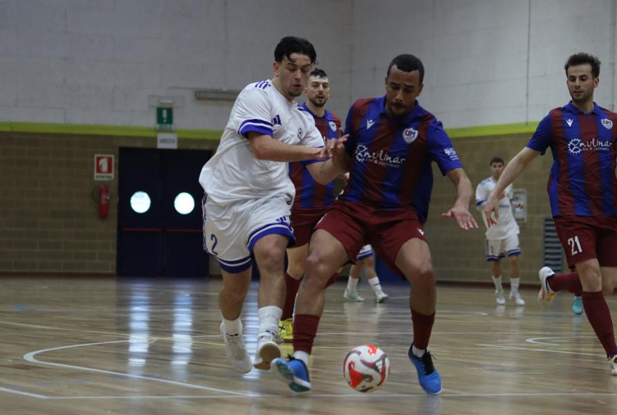

Goleada da record nella storia della società, copertina per Polidori (6 gol e 6 assist) e Leonardo De Giorgio (6 gol)
Partita senza storia a Manzano. La squadra di Sironi e Movio rulla una Clark allo sbando per 22-2. Gli ospiti gialloverdi si presentano con una rosa corta e molto giovane. Qualche giocatore ha anche delle potenzialità, ma la squadra è troppo inesperta e disorganizzata per reggere l’urto di un Manzano che arriva in porta quando vuole.
A dominare le statistiche sono Leonardo De Giorgio e Polidori con 6 gol a testa. Polidori impatta anche negli assist, mandando a rete i compagni per 6 volte. Ottimo l’esordio di Avitabile che segna una tripletta. Giornata da ricordare anche per il classe 2010 Pietro Bon che trova la rete alla prima partita in prima squadra. Contribuiscono alla goleada anche Iurlaro e Lorenzo De Giorgio, entrambi con una tripletta e, rispettivamente, con 3 e 2 assist.
PRIMO TEMPO – Non c’è partita fin dai primi minuti col Manzano che bombarda la porta di Hoxha. La Clark lascia troppi spazi e i seggiolai hanno il controllo totale del pallone. Vantaggio con Leonardo De Giorgio che raccoglie una ribattuta dopo il miracolo di Hoxha su Iurlaro.
Il raddoppio arriva con il primo gol con la maglia del Manzano in Serie C di Avitabile, su assist di Lorenzo De Giorgio.
Tris di Iurlaro che riceve il lancio di Pozzatello, scambia con Polidori, e la mette in porta. Il poker nasce ancora dall’asse Polidori-Iurlaro per la doppietta del numero 10.
Dopo 2 assist arriva anche il gol per Polidori che finalizza il passaggio dal fondo di Valentinuzzi. Sesto gol sempre a firma di Polidori che realizza dopo una bella azione con Valentinuzzi e Avitabile.
Il 7-0 è un eurogol di Leonardo De Giorgio che trova l’incrocio dei pali su punizione.
A 4’ dalla fine c’è gloria anche per Lorenzo De Giorgio che corregge sul secondo palo una rasoiata di Iurlaro. Dinamica simile per la rete di Polidori che devia in porta un’altra stilettata di Iurlaro. Nel mezzo la doppietta di Avitabile, in tap-in, sempre su assist di Polidori.
SECONDO TEMPO – L’inizio della ripresa conferma l’intesa tra Polidori e Avitabile, il capitano della squadra U19 2024-25 riceve un lancio lungo e libera Avitabile, capitano dell’U21 nella stagione attuale, per l’11-0.
Iurlaro sfrutta le sue percussioni per fare assist a Polidori e poi per segnare il 13-0, sul lancio lungo di Pozzatello.
All’8’ del secondo tempo c’è la prima chance concreta per la Clark con il palo di Luria. Il Manzano si rifà sentire subito con il gol di Leonardo De Giorgio, su assist del fratello Lorenzo. Clark che riesce comunque ad accorciare grazie a Bjordi Kanapari, che sfrutta un lancio lungo e sorprende in ripartenza un Manzano sbilanciato in avanti.
Seconda metà della ripresa sempre a senso unico: si scatenano ancora i fratelli De Giorgio. Leonardo trova il gol da fuori area, poi serve l’assist per il 16-1 di Lorenzo. Infermabile anche Polidori che trova 2 reti dal limite dell’area e poi salta il portiere servendo l’assist a Leonardo De Giorgio. Polidori sempre presente nelle azioni più pericolose, quando insieme a Pascale, contribuisce a smarcare il classe 2010 Pietro Bon, in gol all’esordio in prima squadra. Tra i pali arriva un altro esordio stagionale con l’ingresso dell’esperto portiere Calligaro.
Il Manzano conclude la gara con altri due gol: Lorenzo De Giorgio a correggere in porta un tiro di Valentinuzzi e sesto centro di Leonardo De Giorgio. Rete della bandiera della Clark, sempre in ripartenza, a firma di Ferik Driza.
Ora la testa va allo scontro fondamentale di sabato prossimo. A Palmanova, il Manzano sfida i padroni di casa amaranto in una partita che avrà un impatto pesantissimo sulla corsa al primo posto.